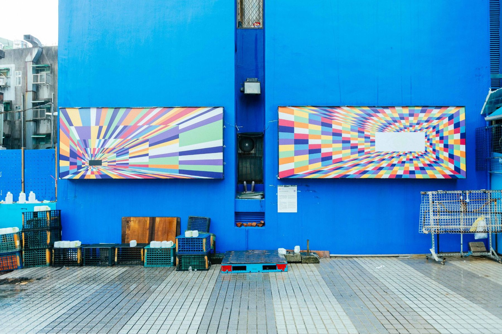
Shuiyuan Market is like a living organism. Each day it draws in the crowds that come to forage, breathing and working to the rhythm of daily life. Moving among the stalls, we find ourselves immersed within it, yet like blind men trying to describe an elephant, we can never quite capture its full picture.
The project, Where Do the Traces in the Kitchen Lead?, scatters clues across the market's entrances through lightboxes, printed images, and an interactive text-based game website. Each is a trace left behind by this organism, an invitation to follow the traces within and assemble your own vision of this marketplace.
水源市場就像是座活的有機體，每日吞吐覓食的人潮，以生活的節奏呼吸、運作，而我們身在其中，穿行於攤位之間，卻如同瞎子摸象，難以真正描繪它的全貌。作品《廚房裡的足跡會帶我通往哪裡？》以燈箱、平面圖像與文字遊戲互動網站所組成，在水源市場各個入口埋下了線索，邀請你依循著市場裡的足跡而行，拼湊出你眼中所見的水源市場。
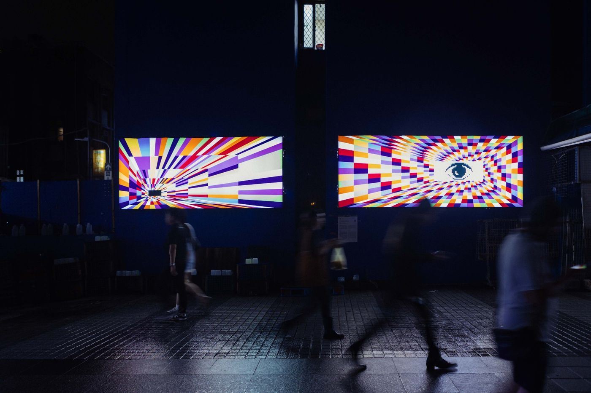
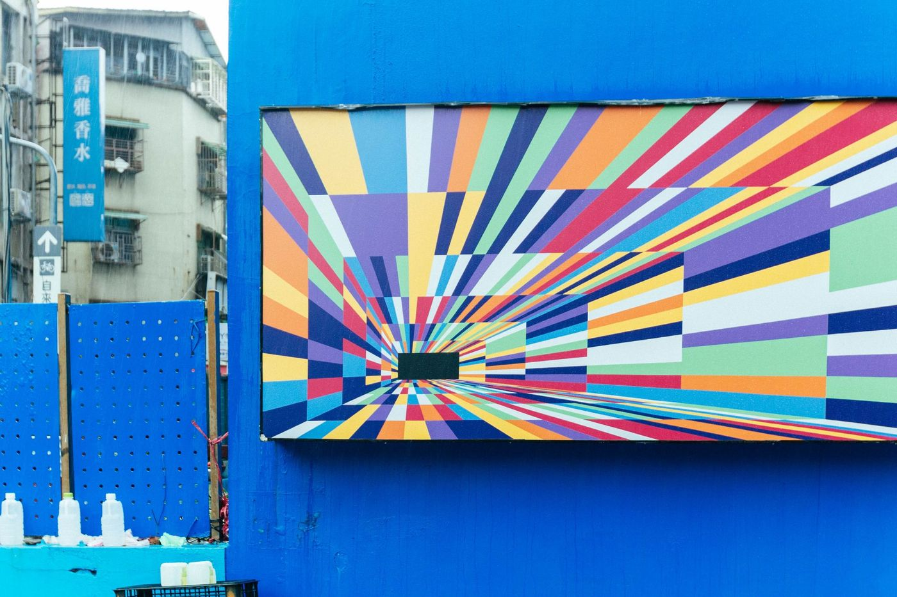
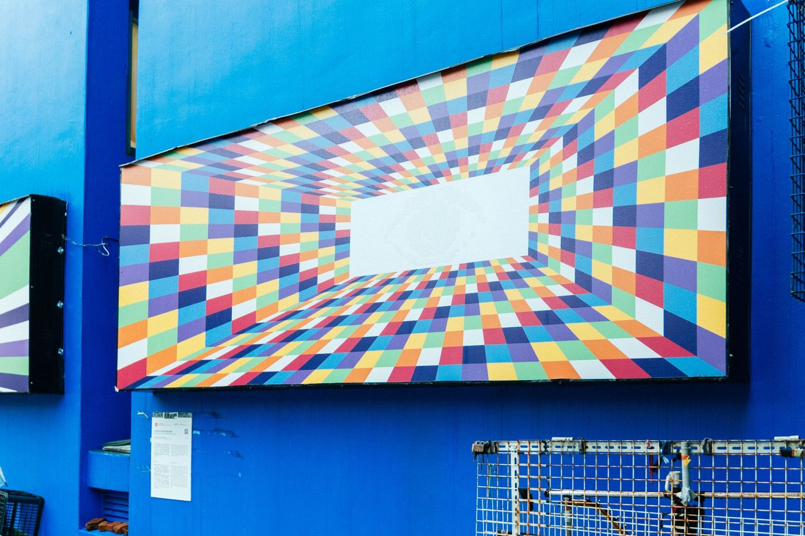
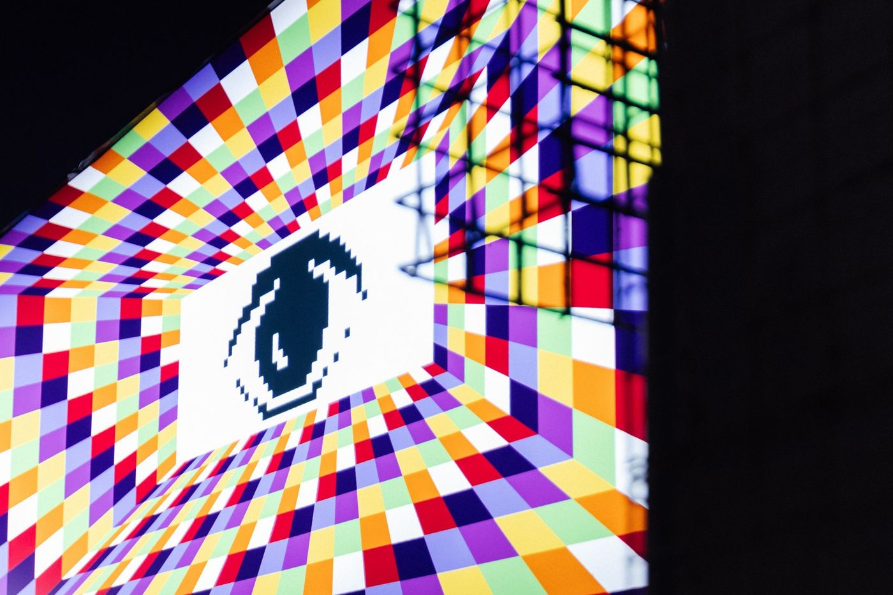
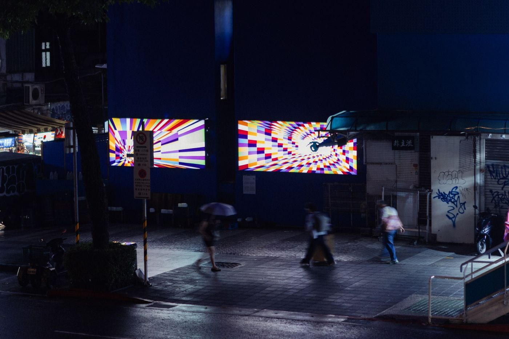
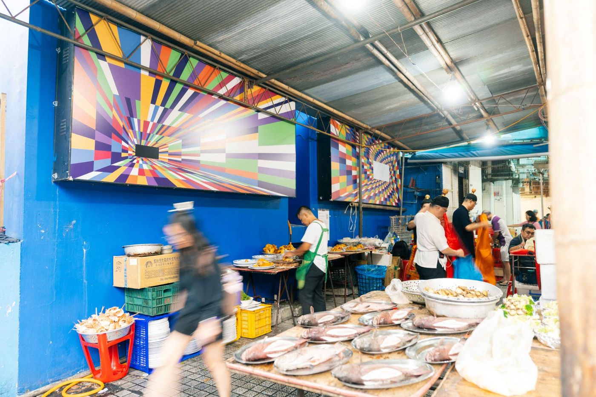
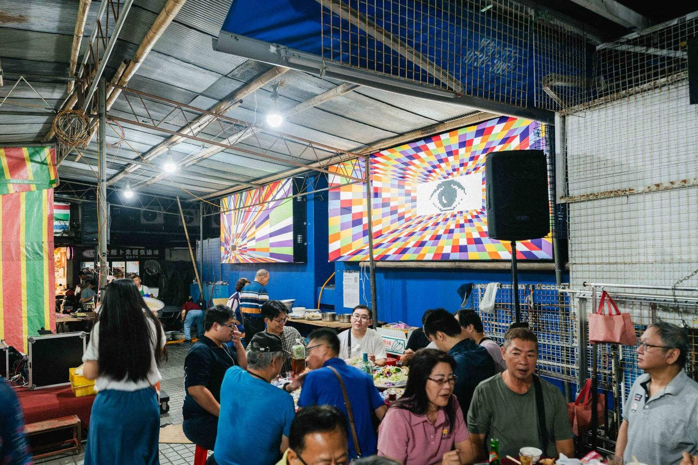
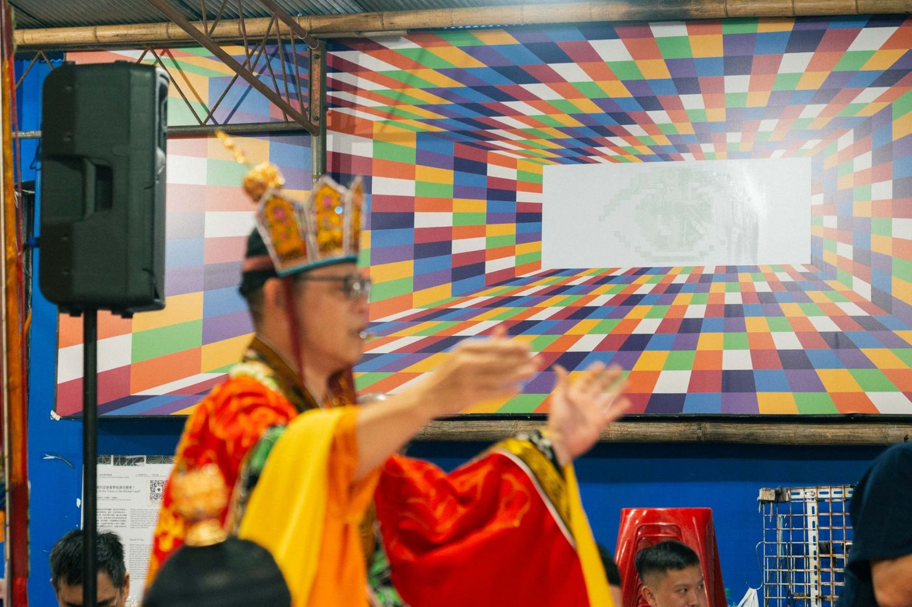
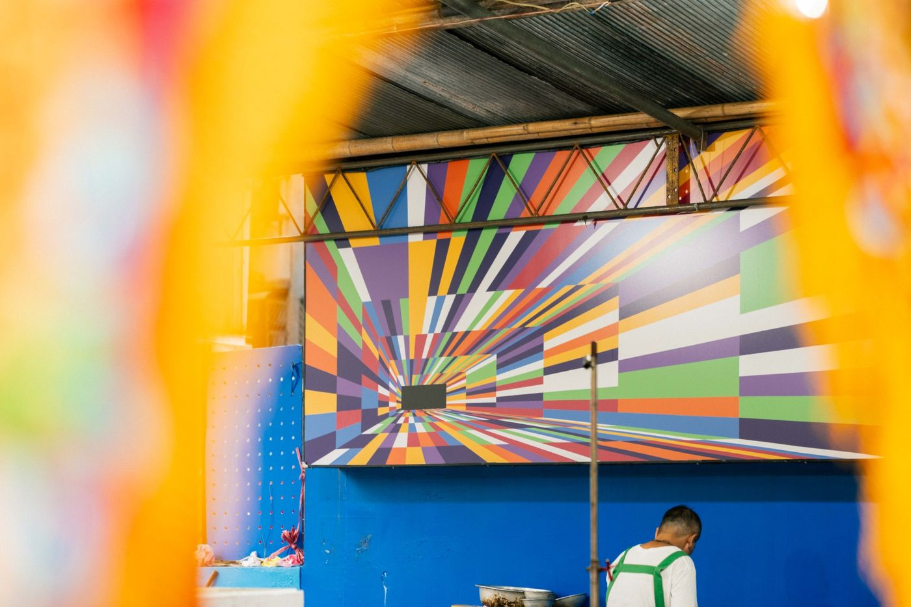
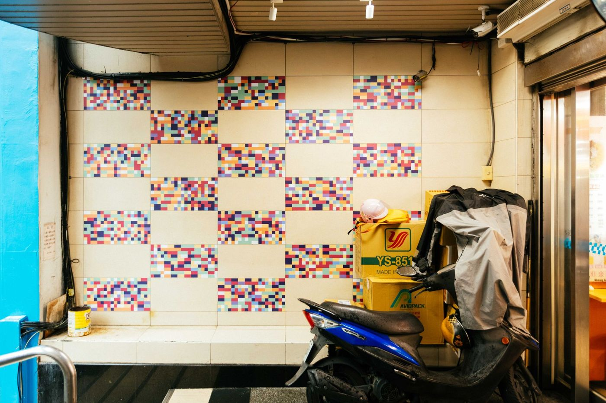
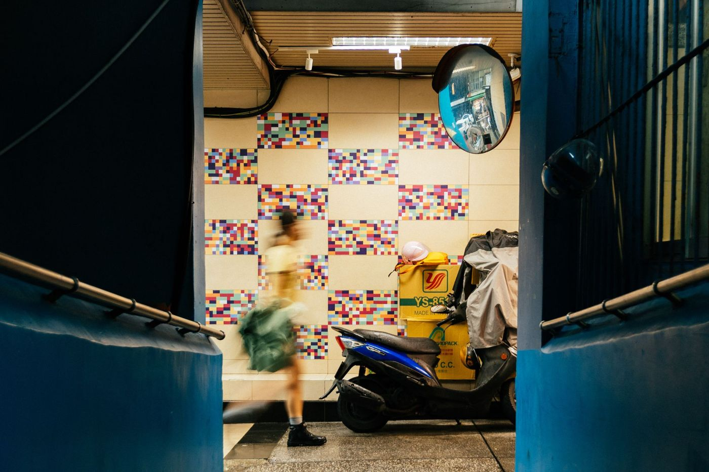
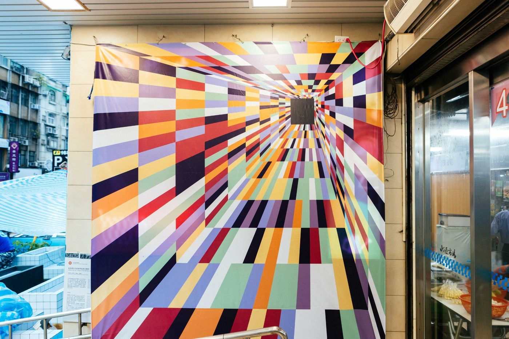